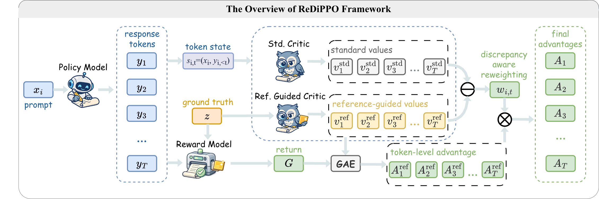

M.S. student at USTC · LLM research
Fei Wu 吴非
I am an M.S. student at the School of Artificial Intelligence and Data Science, University of Science and Technology of China, advised by Prof. Jun Du.
My research focuses on large language model reasoning and agentic reinforcement learning, with a particular interest in efficient post-training and learning from intermediate signals. I received my B.Eng. from the School of Future Science and Engineering at Soochow University.
01
News
-
Released ReDiPPO, a reference-guided and discrepancy-aware PPO framework for mathematical reasoning.
-
Step Potential Advantage Estimation appeared in Findings of ACL 2026.
-
Joined iFLYTEK in Hefei as a research assistant, focusing on LLM post-training.
-
Presented 3D Partial U-Net as an oral paper at ICIC 2024.
02
Publications
† Equal contribution. * Corresponding author.
For the full and most recent list, visit my Google Scholar profile.
03
Experience
2024 — Present
University of Science and Technology of China
M.S. Student · School of Artificial Intelligence and Data Science
Research on LLM reasoning and agentic reinforcement learning. Advisor: Prof. Jun Du.
Nov. 2024 — Present
iFLYTEK · Hefei, China
Research Assistant in Large Language Models
Working on large language model post-training.
Undergraduate
Soochow University
B.Eng. · School of Future Science and Engineering
04
Open-source projects
Value models · Token-level credit
ReDiPPO
Official implementation of reference-guided value calibration and discrepancy-aware token reweighting.
Reasoning · Reinforcement learning
SPAE-RL
Official implementation of Step Potential Advantage Estimation for mathematical reasoning.
Medical image analysis
3D Partial U-Net
Lightweight 3D segmentation models and experiments for head and neck lymph nodes.
05
Service & Honors
Academic service
Invited Reviewer
PRICAI 2023, Signal Processing, and Medical Physics.
Selected honors
- National 2nd Prize, 5th Global Campus AI Algorithm Elite Competition
- 2nd Prize, 14th Lanqiao Cup Python Programming University A Group
- Soochow University Merit Student
- Soochow University Grand Prize Scholarship (top 4%)